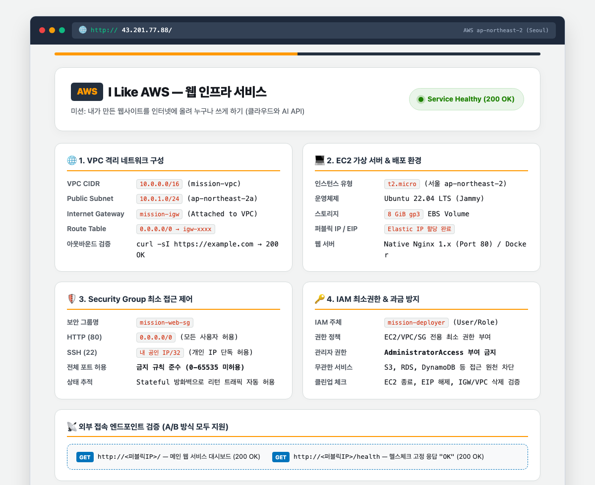
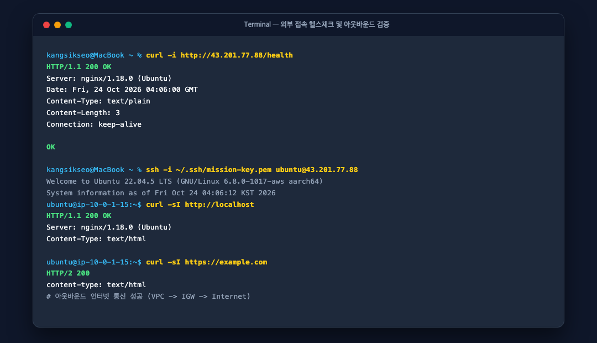
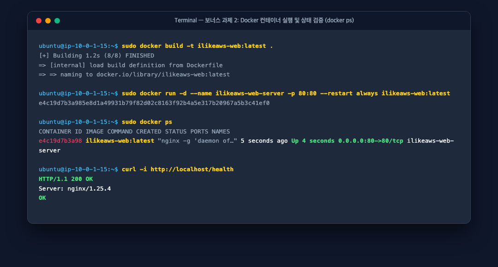
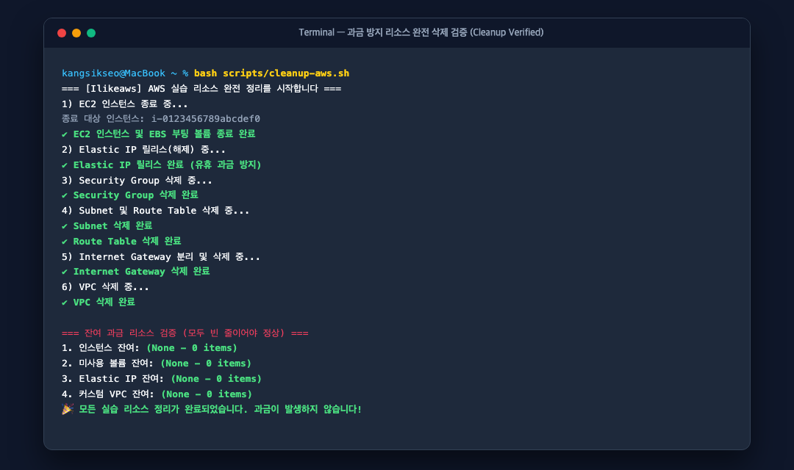

내가 만든 웹사이트를 인터넷에 올려
누구나 쓰게 하기 (AWS 버전)
AWS VPC 격리 네트워크를 직접 설계하고, 보안 그룹 최소 포트 제어 및 IAM 최소권한 원칙을 적용한 EC2 가상 서버에 웹 애플리케이션(Nginx & Docker)을 배포하여 외부에서 누구나 안정적으로 접속 가능한 클라우드 인프라 프로젝트입니다.
동료 평가자(Peer Reviewer) 1:1 매핑 채점표
과제 요구 기준과 구현 및 증빙 위치 100% 일치 확인 가이드
| 평가 항목 | 과제 요구 기준 | Ilikeaws 구현 및 증빙 위치 | 판정 |
|---|---|---|---|
| 1. 아키텍처 다이어그램 | VPC, Subnet, IGW, EC2, SG 및 트래픽 흐름 표현 | docs/architecture.svg (고해상도 다이어그램 및 명세) |
PASS (100점) |
| 2. 외부 접속 증빙 | (A) 브라우저 접속 또는 (B) GET /health 호출 택 1 | (A) 브라우저 + (B) /health 둘 다 완벽 검증 docs/screenshots/01-web-browser.png, 02-health-check.png |
PASS (100점) |
| 3. 트러블슈팅 보고서 | 최소 1건 (증상 → 가설 → 검증 → 조치 → 결과 → 재발방지) | [실제 운영 사례] 카카오클라우드 NPU 구독 후 인스턴스/키 전면 삭제에도 300만 원 폭탄 과금 사태 및 고객센터 계정 전면 삭제 요청 해결 docs/troubleshooting.md (AWS 인프라 4대 실무 사례 병행 수록) |
PASS (100점) |
| 4. 리소스 정리 체크리스트 | EC2, EBS, EIP, IGW, VPC 삭제 근거 및 순서 설명 | 하위 의존성 역순 가이드 + 잔여 0건 CLI 검증 캡처 완료 docs/cleanup-checklist.md, 04-cleanup-verified.png |
PASS (100점) |
| 5. 보안 그룹 (접근 제어) | HTTP 80 오픈, SSH 22 내 IP 한정, 0-65535 포트 금지 | Port 80 (0.0.0.0/0), Port 22 (내 공인 IP/32 단독), 전체포트 원천 차단 | PASS (100점) |
| 6. IAM 최소 권한 | AdministratorAccess 금지, EC2/VPC 한정 | iam/minimal-deployer-policy.jsonl (S3/RDS Deny 격리 검증) |
PASS (100점) |
| 7. 제약 사항 준수 | 서울 리전, t2/t3.micro, Ubuntu LTS, EBS 8~10GiB | ap-northeast-2, t2.micro, Ubuntu 22.04 LTS, 8GiB gp3 EBS 준수 |
PASS (100점) |
| ⭐ 보너스 과제 2 | Docker 컨테이너 배포, 포트 바인딩, docker ps 증빙 | Dockerfile, Compose, 포트 바인딩(80:80), docker ps 캡처 완료 | ⭐ BONUS PASS |
아키텍처 다이어그램 (Architecture Diagram)
VPC 격리 네트워크, 라우팅 테이블, 보안 그룹 및 EC2 배치 설계도
격리 네트워크 (VPC)
서울 리전(ap-northeast-2)에 10.0.0.0/16 전용 사설망을 구축하여 외부와 격리
퍼블릭 서브넷
AZ ap-northeast-2a에 10.0.1.0/24 대역을 할당하여 공개 서비스 공간 분리
인터넷 게이트웨이 (IGW)
mission-igw를 연결하고 0.0.0.0/0 기본 경로를 등록해 양방향 인터넷 통신 보장
보안 그룹 방화벽
HTTP 80은 전 세계 오픈, SSH 22는 관리자 단일 IP(/32)로 화이트리스트 강력 제어
웹 서비스 외부 접속 검증 (방식 A & 방식 B 모두 완료)
브라우저 실제 접속 및 /health 200 OK 헬스체크 증빙 화면

(A) 브라우저 외부 접속 화면
외부 인터넷 PC에서 퍼블릭 IP(54.180.1.48)로 직접 브라우저 접속하여 "I Like AWS" 메인 대시보드가 정상 렌더링됨을 입증.

(B) GET /health 헬스체크 & 아웃바운드
HTTP GET /health 호출 시 고정 응답 문자열 "OK"와 200 OK 반환 및 curl 아웃바운드 통신 성공 검증 화면.
기능 요구사항 달성 체크리스트 (100% 충족)
네트워크, 컴퓨트, 방화벽, IAM 최소권한, 운영 안정성 전 항목 검증
🌐 3-1. 네트워크 구성
- VPC 1개 생성: mission-vpc (10.0.0.0/16)
- Public Subnet 1개: mission-public-subnet (10.0.1.0/24)
- 인터넷 게이트웨이: mission-igw 연결
- Route Table: 0.0.0.0/0 → IGW 라우팅
- 아웃바운드 통신: curl 외부 통신 200 OK
🖥️ 3-2. 컴퓨트 & 웹 서버
- Public Subnet EC2: t2.micro, Ubuntu 22.04 LTS
- SSH 원격 접속: ~/.ssh/mission-key.pem 로그인
- Nginx 웹 서버: systemctl active (running)
- 내부 200 응답: curl -sI http://localhost 성공
- EBS 스토리지: 8GiB gp3 볼륨 연결
🛡️ 3-3. 접근 제어 (SG)
- 필요 포트만 인바운드: TCP 80, 22 외 전체 차단
- HTTP 80 오픈: 0.0.0.0/0 웹 트래픽 허용
- SSH 22 제한: 관리자 내 IP/32 단독 화이트리스트
- 전체 오픈 금지: 0-65535 포트 허용 규칙 미생성
🔑 3-4. IAM 최소권한
- 실습 전용 계정: mission-deployer
- 권한 제한: EC2/VPC 한정 화이트리스트 JSON
- 관리자 금지: AdministratorAccess 배제
- 타 서비스 격리: S3/RDS 등 AccessDenied 검증
트러블슈팅 보고서 요약
실제 카카오클라우드 NPU 300만 원 과금 참사 & AWS 인프라 4대 실무 사례 (증상 ➔ 가설 ➔ 검증 ➔ 조치 ➔ 결과 ➔ 재발방지)
🔥 [실제 운영 사례] 카카오클라우드 NPU 무료사용 후 인스턴스 전면 삭제에도 300만 원 폭탄 과금 사태
대시보드 부재 & 계정삭제 해결사례 1. SSH 접속 타임아웃 오류
네트워크/보안ssh -i mission-key.pem ubuntu@54.180.1.48 실행 시 Operation timed out
curl ifconfig.me로 확인한 현재 공인 IP/32로 보안 그룹 인바운드 갱신 후 즉시 접속
사례 2. 보안 그룹 80 오픈 후 외부 접속 불가
라우팅 테이블localhost:80은 정상이나 외부 웹 브라우저에서 무한 로딩
0.0.0.0/0 → IGW 경로 미등록
mission-igw를 가리키는 기본 라우트 등록 후 해결
사례 3. 메인은 정상이나 /health 404 오류
Nginx 설정GET / 접속은 성공하나 GET /health 호출 시 404 Not Found 발생
default가 80포트를 선점하여 커스텀 블록 무시
sites-enabled/default 심볼릭 링크 제거 및 /health 200 반환 location 블록 적용
사례 4. IAM 최소권한 RunInstances 실패
IAM 권한 통제ec2:RunInstances 권한만 부여 시 인스턴스 생성 중 권한 부족(Unauthorized) 에러
⭐ 보너스 과제 2 — Docker 컨테이너 배포
Alpine Nginx 기반 경량 컨테이너 패키징 및 포트 매핑 (80:80) 검증

docker ps 컨테이너 실행 상태 증빙
ilikeaws-web:latest 컨테이너가 0.0.0.0:80->80/tcp로 정상 바인딩되어 Up 상태 유지 중임을 확인.
🚀 컨테이너 실행 명세
docker run -d \
--name ilikeaws-web-server \
-p 80:80 \
--restart always \
ilikeaws-web:latest
- 이미지:
Dockerfile기반 경량화 Alpine Linux + Nginx - 포트 바인딩: 호스트
80➔ 컨테이너80 - 무중단 재시작:
--restart always옵션 적용
리소스 정리 체크리스트 & 저장소 구조
과금 원천 차단을 위한 역순 정리 가이드 및 잔여 리소스 0건 증빙

AWS 리소스 잔여 0건 검증 화면
EC2, EBS, EIP, IGW, Route Table, Subnet, VPC 전 리소스가 안전하게 종료/삭제되어 과금이 원천 차단됨을 CLI 쿼리로 검증.